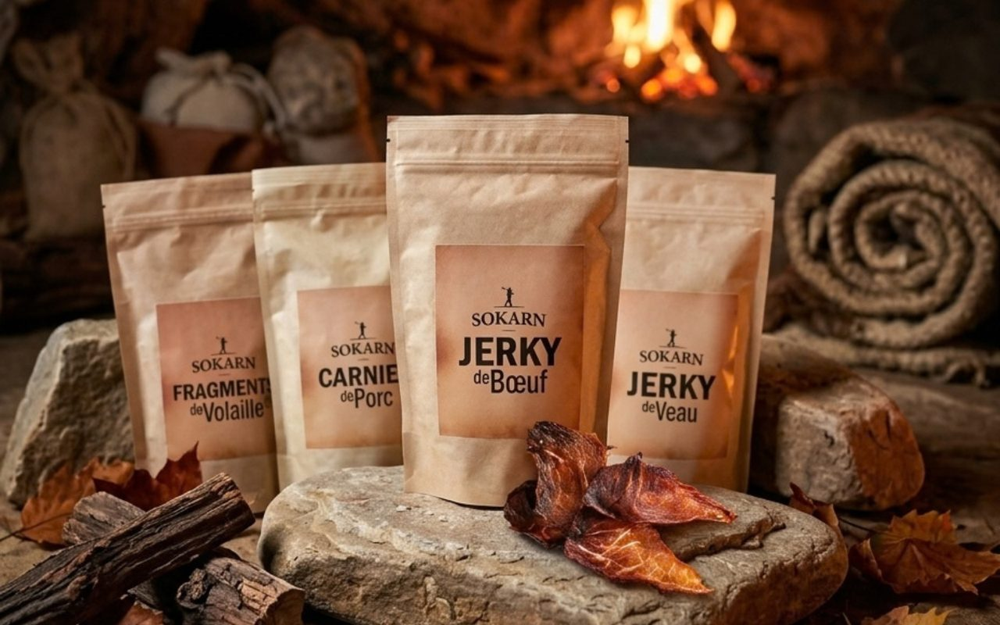
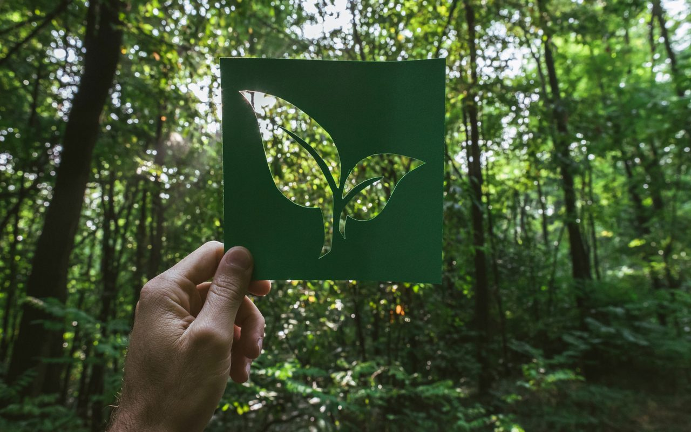
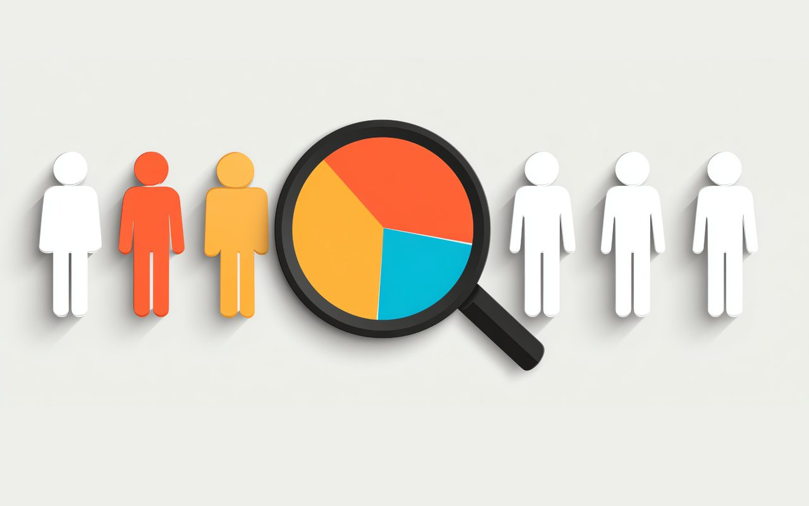
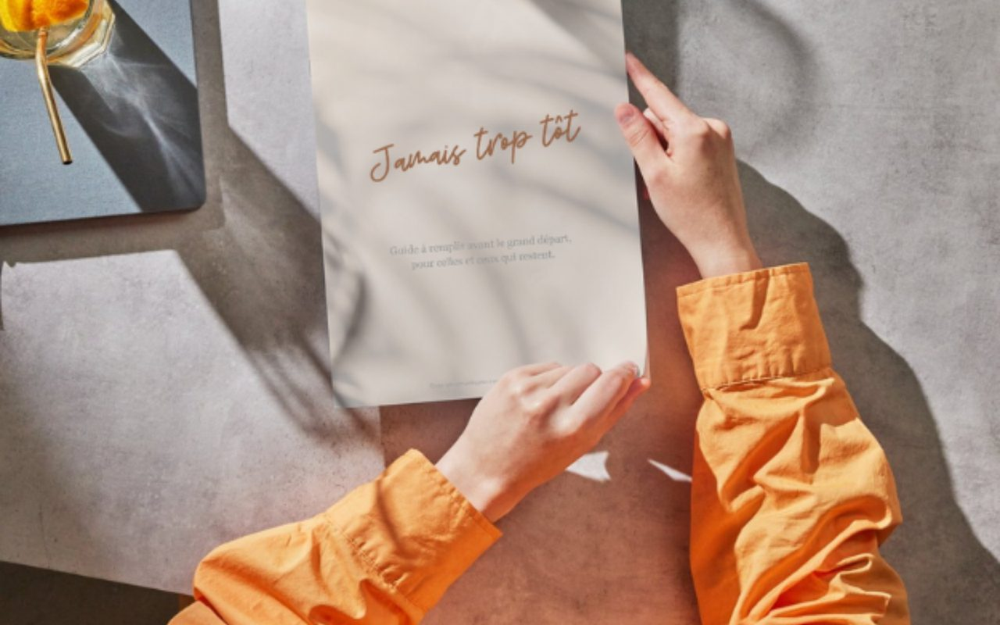

Réalisations
Sept études de cas
Chaque cas suit la même structure : le contexte, mon rôle, ce que j'ai fait, les résultats et ce que j'en retiens. Les missions menées pour mon client principal sont anonymisées ; les données présentées sur ses projets sont fictives.

Faire vendre une petite marque avec un budget très réduit
Une offre flash de 3 jours pour une jeune marque de snacks carnés, du visuel au bilan chiffré.
+55 % de ventes et +36 % de commandesDéploiement d'un outil de satisfaction client, 91 magasins
Gestion de projet : du set-up côté client à l'usage quotidien dans 91 magasins.
Test en région pilote puis déploiement sur tout le réseauTableau de bord et comité de pilotage de la relation client
Un tableau de bord partagé et un comité de pilotage pour transformer les indicateurs en décisions.
5 chantiers, 20 initiatives, un COPIL mensuel et un dashboard utilisé toutes les semaines par le comité de direction
Lancement d'une gamme de produits à impact environnemental réduit
Décider quels produits intègrent la gamme, définir comment et où en parler et vérifier chaque allégation.
Caractéristiques produits, guidelines de marque et plan 360
Faire remonter la voix du client dans les décisions d'une grande enseigne
Une communauté d'insights clients pour obtenir des réponses en quelques jours plutôt qu'en plusieurs semaines.
Des impacts sur la fidélité, le naming, le web et l'offreDeux communautés, deux stratégies
Une agence d'influence et une entreprise de services locale : les mêmes outils, des stratégies adaptées.
+405 % de vues Instagram pour Casaclean
Concevoir, lancer et vendre un produit seule
Un guide de préparation de sa succession, de l'écriture à la vente, avec un tunnel corrigé en cours de route.
46 % de conversion sur la page de captureAutres réalisations
Cofondatrice, en charge de la communication et de la trésorerie du premier salon français dédié aux alimentations réduites en sucre, créé de A à Z avec cinq cofondateurs. 600 visiteurs en 2024, 739 en 2025 (+23 %). Recettes propres en hausse de 22 %, sponsoring passé de 1 000 € à 5 750 €, bénéfice dès la première édition. 875 € de publicité en 2025, avec un taux de clic Meta de 5,1 %.
La création de zéro d'une marque pensée pour les jeunes actifs sur leur lieu de travail. J'ai porté le projet avec deux collègues, avec un rôle majoritaire sur l'identité visuelle, le design et la communication 360. Le concept a été exploité pendant cinq ans.
Le déploiement digital d'une campagne parodique imaginée avec l'agence Les Gros Mots autour de l'élection présidentielle de 2017 : six plats candidats, et un dispositif de vote en ligne en deux tours que j'ai conçu et piloté.
La gestion de projet de la mise en place de l'application mobile click & collect, dont le travail sur l'UX avec l'agence web.
Le site web, le plan de lancement 360 pour l'ouverture d'un nouveau point de vente et les réseaux sociaux.
Des tableaux de garanties et de remboursements de mutuelle rendus lisibles, des flyers commerciaux pour une offre mobile destinée aux seniors, et trois calendriers annuels offerts aux adhérents, graphisme et rédaction autour du bien-être.
La refonte complète de l'identité visuelle et du site.
Une étude du marché français et une recommandation de plan de communication digitale pour une société australienne souhaitant s'implanter en France.
Des bannières promotionnelles et des visuels publicitaires Meta.